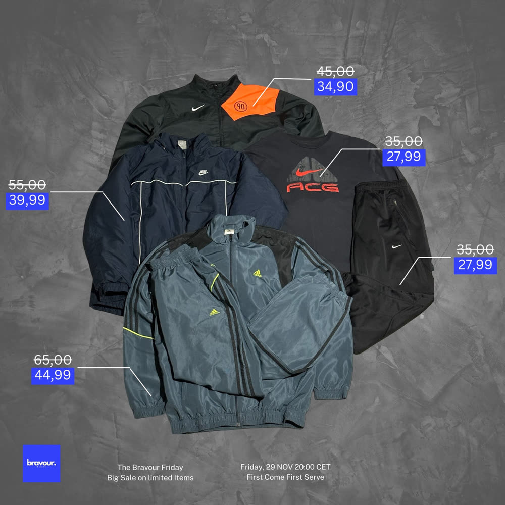
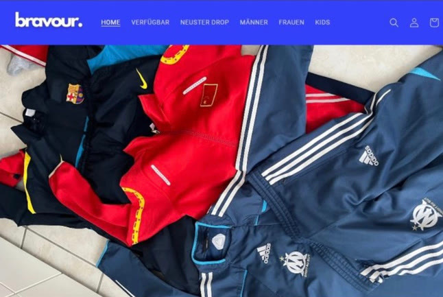
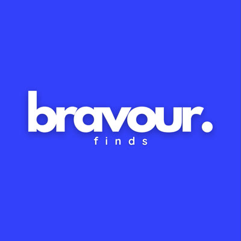

Bravourfinds
Mit Freunden gegründet: Vintage- und Designer-Mode für eine junge Zielgruppe.
Was ich gemacht habe
- Instagram-Auftritt und Branding
- Produktfotos und Content
- Kundenkontakt und Listings
- Sale-Aktionen und Influencer-Kooperationen
Gelernt
Reichweite aufbauen, eine Community pflegen und Produkte so präsentieren, dass sie sich verkaufen.


